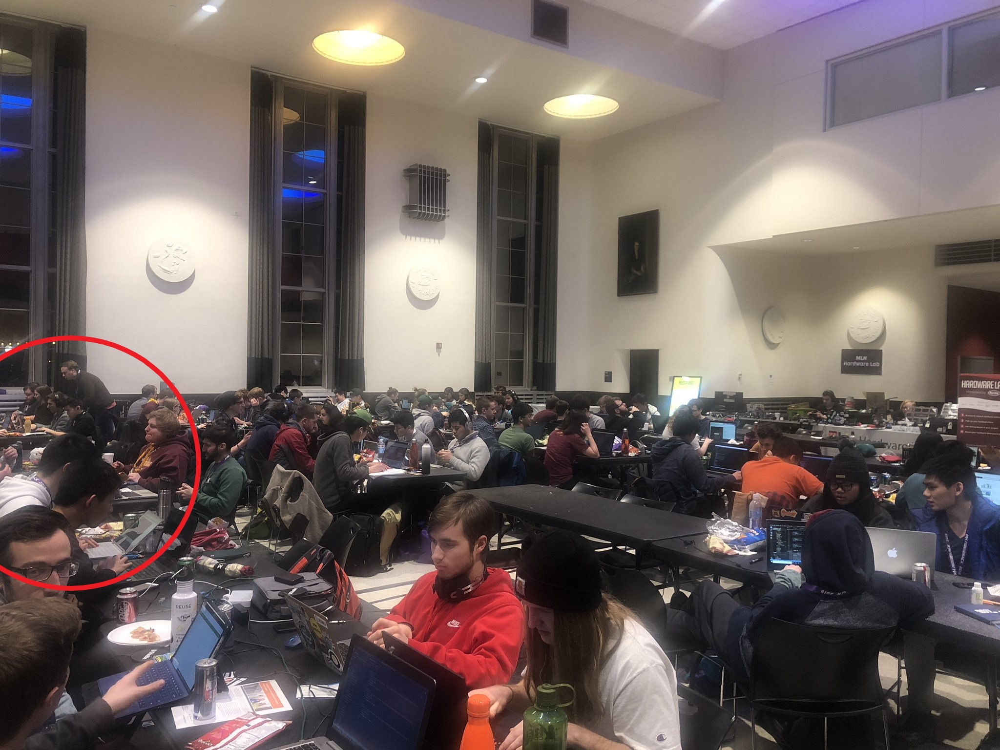
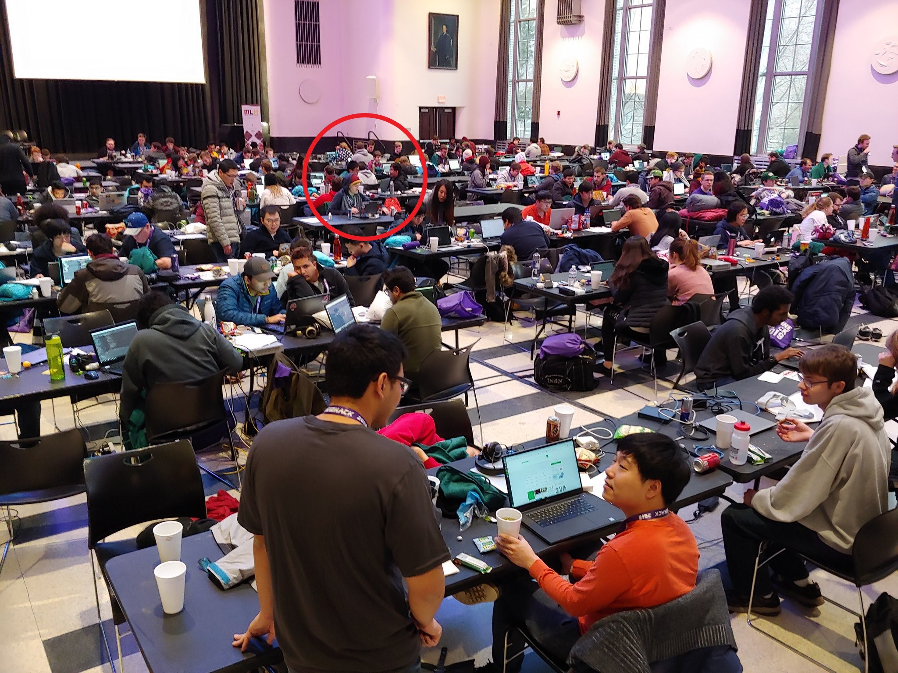

Computer Science
Over the course of a year, I have managed to control the overflowing stack... This is my curriculum vitae. I aspire to be a full stack developer working on
Minnehack 2019
Outside exploration includes using tensorflow keras and flask framework at hackathon Involved learning on the spot Version control through github I am circled in red!


App Development Club
App Dev Club Android App development
ACM Capture the Flag
I learned and worked firsthand on the security of services at the Association of Computing Machinery capture the flag competition, placing third
Conferences and Colloquiums
Tech conference: Colloquium on Information Assurance, Cybersecurity, and Management at the U of M where experts in their field and industry talked about the current state of cyber security in cloud and companies I learned about certifications here and talked with IT security professionals
Code Talks: React Minneapolis, Object Partners Inc. Meetup and Networking
I had the pleasure of enjoying monthly meetups hosted by OPI where I learned about TypeScript and React JS while meeting many professionals
and recruiters in the field from Bestbuy, Buzzfeed, and many others. This was a great catalyst for bringing the code home and cranking out
ideas myself after getting some exposure from the meetups.
Personal and Team Projects
CLI Games: What started out as a series of ideas for simple graphical games based on the command line including Tile Trap, Excavation Defense, and Chess, became a series of games that are in development on Java Swing and Android. Tile Trap is in the testing phase, Excavation Defense is in the design phase, and Chess is being ported over to Android. Find these on my Github